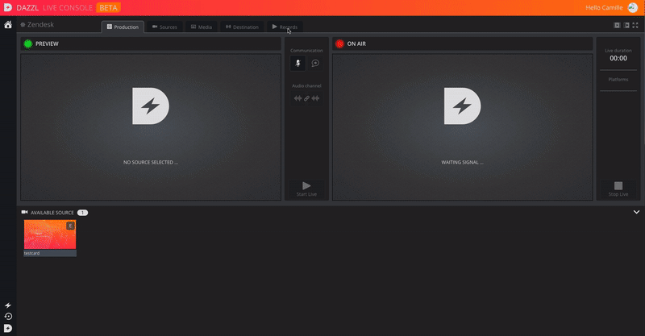
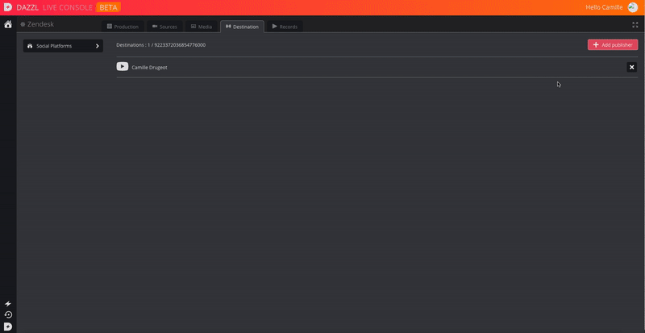

How to broadcast live on YouTube & Facebook?
To broadcast your live on your social networks, click on the "Destination" tab, and then on the "Add Publisher" button.
You will then be able to select the platform on which you want to broadcast.

Broadcast on YouTube
To publish on your YouTube channel, click on the YouTube icon, and log into your account.
Your YouTube channel will then be added as a destination.
Schedule a live on YouTube
You can also schedule your Live on your Youtube account. See YouTube help center.
Schedule your live in advance in Youtube studio to make sure that your fans will be aware of the livestream session. You can then already interact with them, and share the link of the future video.
Make some tests by creating a unlisted/private live, in order to test your material and be well prepared.
You can use Youtube live features, such as "live automatic captions", "location tags", "super chat", etc. It will allow you to increase your live quality and push it to the next level.
Broadcast on Facebook
As for YouTube, click on the Facebook icon, and log into your account.
You can now add the Facebook pages in which you want to broadcast, they will appear in the destinations list.

Schedule a live on Facebook
You can also schedule your live on Facebook, to reach more people and communicate about it.
Here are few steps to follow in order to well schedule your Facebook live :
- Navigate to Publishing Tools.
- Select “Video Library” and then “Live.”
- Copy your stream credentials (e.g. steam key, Server URL). If you need to find the credentials closer to the time you’re going live, they are also available by editing the post in Video Library.
- Craft your announcement post. Be sure to write an engaging and informative description so your followers know what to expect from your broadcast. You will be able to update the description later if you want to.
- Finalize your scheduled live broadcast. Put any finishing touches on your post (such as adding a custom image) before you schedule your broadcast.
From Facebook "Best Practices"